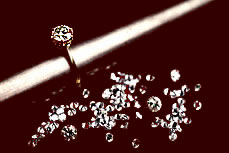

Jewelry
Here at Jean Kalen Jewelry, it is all about the jewelry! That's why 75% of our business is repeat business. We get that. We don't try to trick you into buying something inferior and pretend that we're giving you a special discount. We just give you the best jewelry we can find at the best price we can offer. It's that simple. Jean Kalen is known for a wide selection of gems including topaz, sapphire, ruby, aquamarine, emerald, tahitian pearl, onyx, jade, and many more. Whatever gem you're dreaming about, you'll find it here in a variety of colors, shapes, and sizes to meet your particular taste and budget.
Diamonds
Ahh, diamonds... nothing quite says it like a diamond. But before you start looking for a diamond, you should learn the basics about what affects the quality and price of diamonds. And that leads us to...
The "Four C's" of Diamonds:
- "Cut" (how well the diamond has been cut so as to shine brightly,
- "Color" (how much off-color or yellow is visible,
- "Clarity" (how many imperfections are present within the diamond itself), and
- "Carat" (weight or "size" of the diamond). Each of these factors affect a diamond's value and price.
Each month we will feature information about one of the 4 C's. Below is a helpful guide regarding diamond color.
| Letter | Meaning | Description | Comment |
|---|---|---|---|
| D | Absolutely colorless | Highest grade | Very rare |
| E | Colorless | Minute color traces | Rare diamond |
| F | Colorless | Only slight color | High-quality diamond |
| G-H | Near-colorless | Color detectable | Excellent value |
| I-J | Near-colorless | Color noticeable | Excellent value |
| K-Z | Noticeable color | Color detracts | Not sold by JKJ |
We wholesale and retail diamonds, so our selection is always outstanding because we always save the best for ourselves! And at Jean Kalen's, if you're not satisfied with our selection, we aren't either. We'll special order any one-of-a-kind item you have in mind. By the way, our staff does not make commissions on sales. Instead they are just paid well to do their jobs well and the result is a no pressure, customer first approach that we think you'll find unique and refreshing. Kinda like our jewelry!
Home | Jewelry | Locations | About Us | Contact Us
© Jean Kalen Jewelry, All rights reserved.